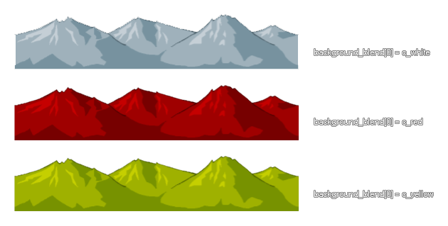

background_blend[0...7]
Returns: Real
This variable array returns the colour blend value of any one of
the 8 backgrounds (numbered form 0 - 7 within the array) of the
current room. The default value is -1 (which is also equal to the
GameMaker: Studio constant c_white), but this can
be set to any colour value with varying effects being achieved
depending on the background image itself, as shown in the image
below. For best results, it is recommended that you only blend a
colour with a grey-scale, or black and white, image. 
switch (background_blend[0])
{
case c_white: background_blend[0] = c_yellow;
break;
case c_yellow: background_blend[0] = c_green;
break;
case c_green: background_blend[0] = c_aqua;
break;
case c_aqua: background_blend[0] = c_orange;
break;
case c_orange: background_blend[0] = c_white;
break;
}
The above code will change the blend colour of background0 depending on the current blend colour that is being used.